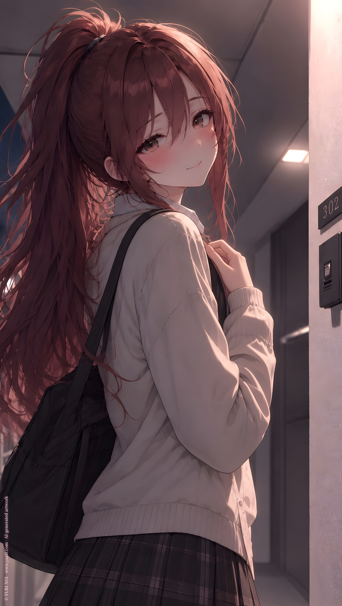

ORIGINAL TRACK ／ YURI NO1
冗談だよ...半分は
Ximuer · Five bottles
Lyrics · Base Script
[Verse 1]
ねえ 今日も遅かったね
別に待ってないけど
コンビニの白い灯りで
あなたの顔 よく見える
いつもと違う香り
知らない癖が増えてる
そんなこと気づくなんて
私 変かな
[Pre-Chorus]
ねえ こっち見て
少しだけ
ちゃんと目を見て話して
大丈夫
怒ってないよ
ただ知りたいだけ
[Chorus]
好きなところへ行っていいよ
誰と笑ってもいいよ
私は何も言わないから
安心してね
でも帰る道くらい
覚えていてほしいな
迷ってしまったその時は
私のところへ帰って
[Verse 2]
あなたが好きな飲み物
もう言われなくてもわかる
レジの向こうから見れば
今日の気分までわかる
スマホを伏せる仕草も
嘘をつく時の声も
知らないふりしてあげる
優しいでしょう？
[Pre-Chorus]
ねえ 笑って
いつもみたいに
そんな顔しないでよ
怖くないよ
何もしないよ
たぶんね
[Chorus]
好きなところへ行っていいよ
誰を好きでもいいよ
私は嫉妬なんてしない
本当だよ
でもあなたの名前を
優しく呼ぶ人がいたら
どんな人なのかくらいは
少し知りたいだけ
[Bridge]
あなたの好きなもの
あなたの嫌いなもの
眠れない夜の時間
帰り道の信号
全部ただ覚えてるだけ
特別な意味はないよ
ねえ
どうして震えてるの？
[Whisper]
冗談だよ
……半分は
[Final Chorus]
好きなところへ行っていいよ
ほら 扉も開いてる
止めたりなんてしないから
好きにすればいい
だけど最後に疲れて
誰も信じられなくなったら
きっとあなたは思い出す
ここが一番安全だって
[Outro]
ちゃんと帰ってね
着いたら連絡して
しなくても
わかるけど
YURI NO1 Music / AI Generated Music / https://music.yuri1.com